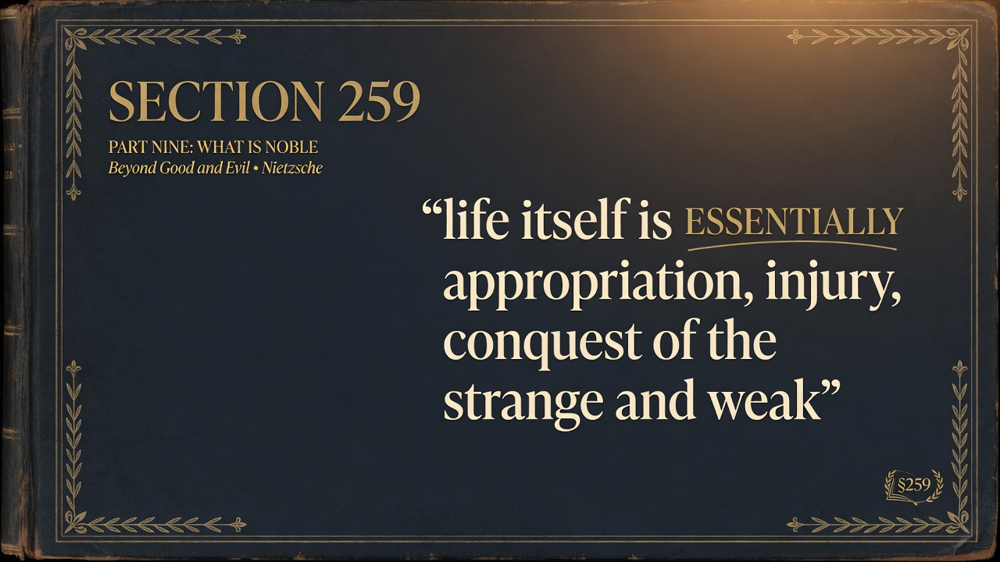
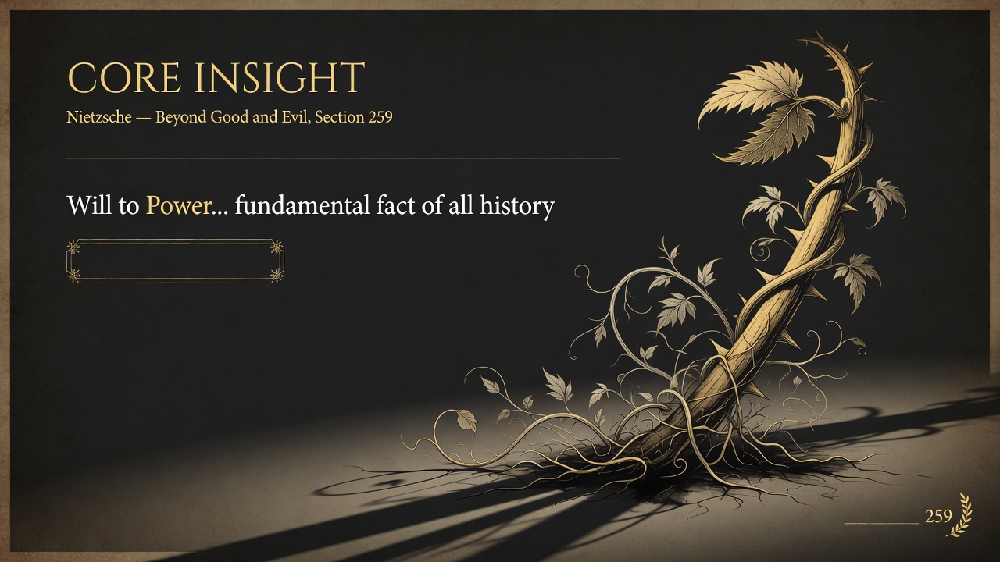
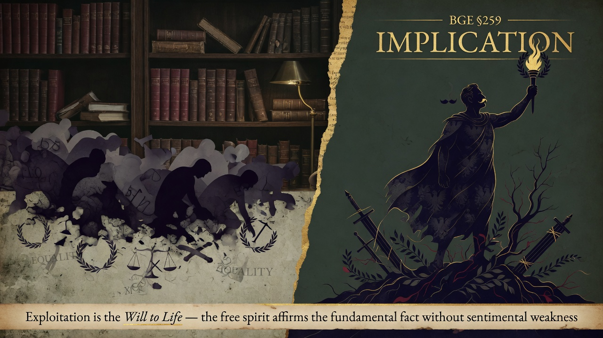

The idea that society should be built on zero exploitation is life-denying—life itself runs on will to power. Anti-exploitation ideologies try to remove the very conditions life needs to grow. Affirming life means accepting power and rank without sentimental weakness.
Here one must think profoundly to the very basis and resist all sentimental weakness: life itself is ESSENTIALLY appropriation, injury, conquest of the strange and weak, suppression, severity, obtrusion of peculiar forms, incorporation, and at the least, putting it mildest, exploitation.
The ideal of universal non-injury and non-exploitation as society's foundation is life-denying. Life, including the life of any healthy higher organization, affirms itself through will to power.
Directly extends 258. The healthy aristocracy that accepts with good conscience the sacrifice of many for its elevation is not an arbitrary cruelty but an expression of the same fundamental fact: life is will to power. 259 supplies the ontological ground. It also sets the stage for 260's master morality, which openly values the strong, the creator of values, and actions "beyond good and evil."
Egalitarian, humanitarian, and "anti-exploitation" ideologies that treat power, rank, and appropriation as removable evils pursue the abolition of life's conditions themselves. The free spirit does not celebrate destruction but refuses sentimental weakness: without the will to overcome and incorporate resistance there is no growth, no elevation of the type "man," no new nobility. To affirm life is to affirm will to power without moralistic disguise.


